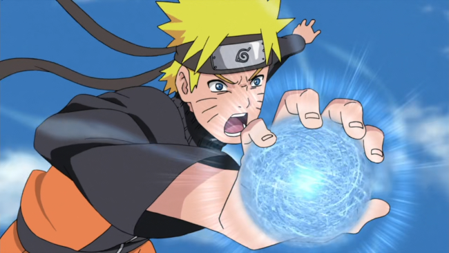

Técnica dos Múltiplos Clones da Sombra (Tajuu Kage Bunshin no Jutsu)
Semelhante à Técnica de Clonagem básica, esta técnica cria cópias do usuário. No entanto, os clones são fisicamente reais, em vez de ilusões. O chakra do usuário é uniformemente distribuído entre cada clone, dando a cada um deles uma fração igual do poder total do usuário. Os clones são capazes de executar técnicas por conta própria e podem até sangrar, mas são dispersos após atingidos por uma força forte o bastante, geralmente.
Jutsu de Invocação (Kuchiyose no Jutsu)

A Técnica de Invocação é um ninjutsu de espaço-tempo que permite que o invocador transporte animais ou pessoas através de longas distâncias instantaneamente através do sangue do usuário. Antes que uma invocação animal possa ser executada, o invocador candidato deve primeiro assinar um contrato com uma determinada espécie. O contrato vem na forma de um pergaminho, no qual o contratante usa seu próprio sangue para assinar o seu nome e colocar suas impressões digitais e, uma vez assinado, é válido mesmo após a morte dos contratantes, desde que o contrato em si permaneça intacto.
Rasengan
O Rasengan é uma técnica poderosa de Rank A inventada pelo Quarto Hokage, que a criou observando a formação da Bola da Besta com Cauda. É a manipulação de chakra puro, em forma de uma esfera espiral de chakra. Minato Namikaze passou três anos desenvolvendo o Rasengan, seu plano era tomar a forma de transformação de chakra para o "nível mais alto possível", e então combiná-lo com sua afinidade de chakra da natureza, criando uma técnica que não precisava da ajuda de selos de mão e controle.
Rasenshuriken
O Estilo Vento: Rasenshuriken é um jutsu criado por Naruto Uzumaki após ele ter dominado a transformação da forma e da natureza do Rasengan. Ao manipular o chakra da natureza vento do Estilo Vento: Rasengan, Naruto foi capaz de criar quatro pontos de grande porte, fazendo com que o Rasengan assumisse a aparência de uma fūma shuriken gigante, com o Rasengan no centro permanecendo uma esfera perfeita. A técnica emite um ruído intenso semelhante a um grito, durante e após a formação. A fim de realizar isto, Naruto necessita da ajuda de dois clones das sombras; ele fornece o chakra, um clone é responsável pela transformação da forma e o outro proporciona a transformação da natureza.